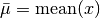
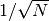
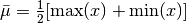
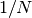

Convergence of mean for uniformly distributed values¶
Figure 3.21.
A comparison of the sample-size dependence of two estimators for the location parameter of a uniform distribution, with the sample size ranging from N = 100 to N =10,000. The estimator in the top panel is the sample mean, and the estimator in the bottom panel is the mean value of two extreme values. The theoretical 1-, 2-, and 3-sigma contours are shown for comparison. When using the sample mean to estimate the location parameter, the uncertainty decreases proportionally to 1/ N, and when using the mean of two extreme values as 1/N. Note different vertical scales for the two panels.
The two methods of estimating the mean  are:
are:
- , with an error that scales as .
- , with an error that scales as .
The shaded regions on the plot show the expected 1, 2, and 3- error. Notice the difference in scale between the y-axes of the two plots.
error. Notice the difference in scale between the y-axes of the two plots.
{kind=link}
# Author: Jake VanderPlas
# License: BSD
# The figure produced by this code is published in the textbook
# "Statistics, Data Mining, and Machine Learning in Astronomy" (2013)
# For more information, see http://astroML.github.com
# To report a bug or issue, use the following forum:
# https://groups.google.com/forum/#!forum/astroml-general
import numpy as np
from matplotlib import pyplot as plt
from scipy.stats import uniform
#----------------------------------------------------------------------
# This function adjusts matplotlib settings for a uniform feel in the textbook.
# Note that with usetex=True, fonts are rendered with LaTeX. This may
# result in an error if LaTeX is not installed on your system. In that case,
# you can set usetex to False.
from astroML.plotting import setup_text_plots
setup_text_plots(fontsize=8, usetex=True)
#------------------------------------------------------------
# Generate the random distribution
N = (10 ** np.linspace(2, 4, 1000)).astype(int)
mu = 0
W = 2
rng = uniform(mu - 0.5 * W, W) # uniform distribution between mu-W and mu+W
#------------------------------------------------------------
# Compute the cumulative mean and min/max estimator of the sample
mu_estimate_mean = np.zeros(N.shape)
mu_estimate_minmax = np.zeros(N.shape)
for i in xrange(len(N)):
x = rng.rvs(N[i]) # generate N[i] uniformly distributed values
mu_estimate_mean[i] = np.mean(x)
mu_estimate_minmax[i] = 0.5 * (np.min(x) + np.max(x))
# compute the expected scalings of the estimator uncertainties
N_scaling = 2. * W / N / np.sqrt(12)
root_N_scaling = W / np.sqrt(N * 12)
#------------------------------------------------------------
# Plot the results
fig = plt.figure(figsize=(5, 3.75))
fig.subplots_adjust(hspace=0, bottom=0.15, left=0.15)
# upper plot: mean statistic
ax = fig.add_subplot(211, xscale='log')
ax.scatter(N, mu_estimate_mean, c='b', lw=0, s=4)
# draw shaded sigma contours
for nsig in (1, 2, 3):
ax.fill(np.hstack((N, N[::-1])),
np.hstack((nsig * root_N_scaling,
-nsig * root_N_scaling[::-1])), 'b', alpha=0.2)
ax.set_xlim(N[0], N[-1])
ax.set_ylim(-0.199, 0.199)
ax.set_ylabel(r'$\bar{\mu}$')
ax.xaxis.set_major_formatter(plt.NullFormatter())
ax.text(0.99, 0.95,
r'$\bar\mu = \mathrm{mean}(x)$',
ha='right', va='top', transform=ax.transAxes)
ax.text(0.99, 0.02,
r'$\sigma = \frac{1}{\sqrt{12}}\cdot\frac{W}{\sqrt{N}}$',
ha='right', va='bottom', transform=ax.transAxes)
# lower plot: min/max statistic
ax = fig.add_subplot(212, xscale='log')
ax.scatter(N, mu_estimate_minmax, c='g', lw=0, s=4)
# draw shaded sigma contours
for nsig in (1, 2, 3):
ax.fill(np.hstack((N, N[::-1])),
np.hstack((nsig * N_scaling,
-nsig * N_scaling[::-1])), 'g', alpha=0.2)
ax.set_xlim(N[0], N[-1])
ax.set_ylim(-0.0399, 0.0399)
ax.set_xlabel('$N$')
ax.set_ylabel(r'$\bar{\mu}$')
ax.text(0.99, 0.95,
r'$\bar\mu = \frac{1}{2}[\mathrm{max}(x) + \mathrm{min}(x)]$',
ha='right', va='top', transform=ax.transAxes)
ax.text(0.99, 0.02,
r'$\sigma = \frac{1}{\sqrt{12}}\cdot\frac{2W}{N}$',
ha='right', va='bottom', transform=ax.transAxes)
plt.show()